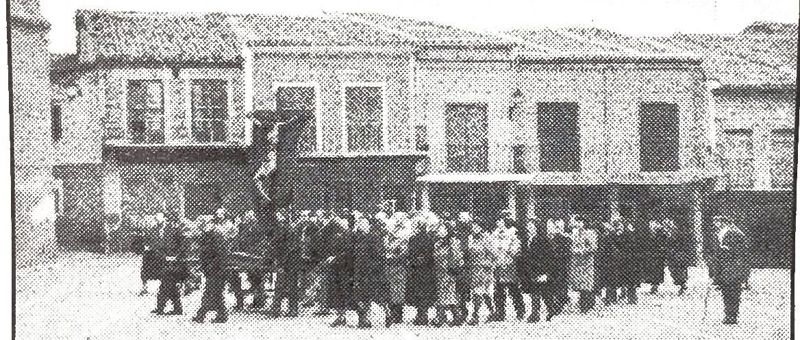
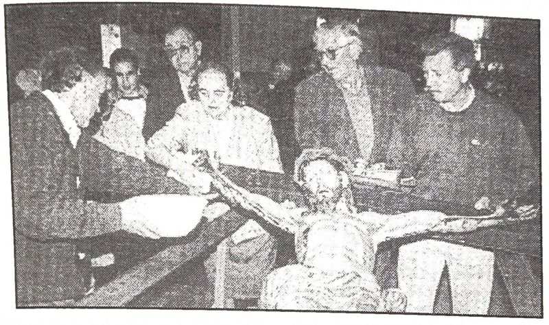
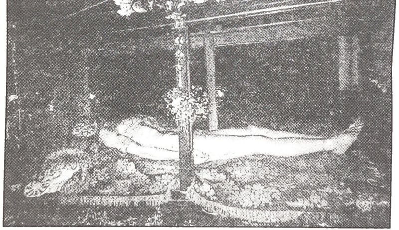

Cuaresma y Semana Santa
De la procesión del Cristo de la Caridad en Carnaval al Encuentro del Domingo de Resurrección: nueve cofradías, dos parroquias y el vino del Cristo de la Salud.
En esta página (6 apartados · 12 min de lectura)
Carnaval: el Cristo de la Caridad

La Semana Santa de Alaejos empieza, en realidad, en Carnaval. Ese fin de semana la cofradía del Santísimo Cristo de la Caridad, con sede en San Pedro, celebra misa solemne y saca su imagen en procesión alrededor de la Plaza Mayor (Programa de Semana Santa 2025). Las fuentes no coinciden en el día. La guía de la Diputación de 2014 sitúa la procesión el martes de Carnaval, y en 2025 se hizo el domingo, con adoración eucarística el lunes y el martes (Diputación de Valladolid, Guía de Semana Santa 2014). Tampoco hay acuerdo sobre su antigüedad. El Ayuntamiento habla de unas normas del siglo XVI, y el Patronato de Turismo de la Diputación, de una fundación en 1733 (véase Iglesia de Santa María). La guía de 2014 fecha la imagen hacia 1500, y también lo hace el libro de 2001, que da además la fecha exacta de fundación: el 15 de febrero de 1733, en San Pedro. Según ese libro, la cofradía pagó el retablo churrigueresco de la imagen, de escuela salmantina, que casi la arruinó, y en 1735 celebró su inauguración con cinco días de fiesta, fuegos artificiales y toros corridos y enmaromados en la Plaza Mayor. En 1738 sacó el Cristo en rogativa hasta Santa María por la sequía (Caballero Morante, Alaejos, del sepia al color, 2001). En 1991 la cofradía celebraba un triduo el domingo, el lunes y el martes de Carnaval, con sermones que se repartían entre los cofrades y un convite de vino y bizcochos en la sacristía (Rodríguez Carracedo, Alaejos, apuntes histórico-artísticos, 1991, pág. 42-43). Esa descripción encaja con la de 2025, que reparte los actos entre los tres días.
En 2001 la hermandad tenía 33 hermanos, hombres y mujeres, y cada día del triduo servía uno distinto, de modo que el turno daba la vuelta a todos cada once años. El hermano que servía organizaba los actos y pagaba el refresco de vino blanco y bizcocho en la sacristía. El martes se sacaba el Cristo por la Plaza Mayor en unas andas de nogal hechas por Pedro Gallo, y antes de devolverlo al altar se repartían los alfileres del Cristo. La cofradía tuvo vajilla propia porque el Domingo de Resurrección daba un cocido a los necesitados; la última comida se sirvió en 1966. Desde 1999 la cofradía del Santo Entierro celebra el triduo junto a ella, «en reparación de las blasfemias» de esos días (Caballero Morante, Alaejos, del sepia al color, 2001).
Antonio Lucas Varela, en Cerramícalo (2002, págs. 222-223), da otros datos. Para él es la cofradía más antigua del pueblo, fundada en 1746, y sus 33 hermanos representan la edad de Cristo cuando fue crucificado. Durante el triduo permanecía expuesto el Santísimo y los hermanos se turnaban para velarlo, de modo que nunca estuviera solo. Cada año tres hermanos organizaban los actos y pagaban el sermón y el convite. Del cocido de los pobres cuenta que lo daba, cada 33 años, el hermano al que le tocaba el turno, a doce pobres y al párroco, el Domingo de Resurrección, servido por él y por su familia en el antiguo Hospital de pobres, junto a Santa María, que hoy es el Centro de Salud. Añade que la procesión del martes de Carnaval es la única que se celebra en España ese día, y que la imagen es una talla barroca anónima del siglo XVI.


Los viernes de Cuaresma
Durante la Cuaresma, todos los viernes hay cultos a Nuestro Padre Jesús Nazareno en Santa María. El primero incluye la llamada Misa de las mujeres, y un domingo de Cuaresma todas las cofradías penitenciales asisten a una misa que termina con el Besapié (Programa de Semana Santa 2025). Las campanas también lo recogían, con un toque propio para Jesús Nazareno el primer viernes de marzo (Rubio Martínez y otros, programa de 2025). Siguen el novenario de la Virgen de los Dolores y, el Viernes de Dolores, el pregón de Semana Santa en Santa María.
La semana grande
La semana grande alterna entre las dos parroquias. El Domingo de Ramos se bendicen los ramos en Santa María y la Borriquilla va en procesión hasta San Pedro. En 1991 los ramos eran de laurel, y sus hojas servían para el puchero de todo el año. Ese día todos estrenaban algo, porque «Quien no estrena el Domingo de Ramos, se queda sin pies ni manos» (Rodríguez Carracedo, Alaejos, apuntes histórico-artísticos, 1991, pág. 43). El Miércoles Santo tiene lugar la costumbre más singular. Antes del Vía Crucis por el Arrabal se baja la imagen del Cristo de la Salud, sus hermanos le lavan las llagas con vino, y lo mismo se hace con el lazo del paño de pureza del Cristo Atado a la Columna. Ese vino se reparte después entre los fieles, sobre todo entre los enfermos. Desde al menos 2025 el programa lo llama «bendición del vino» y lo sigue una misa con unción de enfermos (Diputación de Valladolid, Guía de Semana Santa 2014; Programa de Semana Santa 2025). En el pueblo se tenía ese vino por curativo (Lucas Varela, programa de 2003).
El Jueves Santo, en la misa de la Cena del Señor se lava los pies a los doce hermanos del Cristo de la Salud. Por la noche sale la procesión de la Pasión con seis pasos: la Oración del Huerto, el Cristo Atado a la Columna, Jesús Nazareno, la Caída, el Cristo Despojado y el Cristo de la Salud. El Viernes Santo, después de los Oficios en San Pedro, salen el Santo Entierro, con la Dolorosa y la Soledad, y a medianoche la procesión del Silencio con la Virgen de los Dolores, que esta web ya señalaba como el acto central de la Semana Santa local (véase Fiestas y tradiciones). El Domingo de Resurrección, la Virgen de la Alegría y el Cristo Resucitado se encuentran en la Plaza Mayor, a los pies de San Pedro (Diputación de Valladolid, Guía de Semana Santa 2014). En 1991 la procesión del Silencio salía con la Dolorosa sola y su cofradía. Mientras tanto, como las campanas callaban hasta el domingo, los monaguillos llamaban con carracas y matracas, y los vecinos jugaban a las chapas. Para Semana Santa se hacían flores y torrijas, y antiguamente se daba potaje a los pobres en Santa María (véase Cocina tradicional). Organiza todo ello una Junta Local de Semana Santa que agrupa nueve cofradías penitenciales. Que en el pueblo se hable de una rivalidad entre los barrios de las dos parroquias es, por ahora, tradición oral sin apoyo en documentos (véase Iglesia de San Pedro).
El pregón y los recuerdos
La Semana Santa se abre con un pregón el viernes de Dolores. En el de 2008, Antonio Lucas Varela recordó la de su niñez: los jueves de comadres y compadres y el Domingo gordo, la ceniza que se imponía a todos los críos con los maestros, el «pique» entre las dos parroquias por el recorrido de las procesiones, que encarnaban sus párrocos, don Ausencio y don Antonino, y las procesiones sin flores, palios ni bandas, solo con cantos penitenciales. Los monaguillos iban por las calles anunciando los oficios y tocando las carracas. El cocido y el potaje se daban en lo que hoy es el centro de salud, y los cirios del Monumento se repartían por las casas con el nombre del dueño grabado y coloreado con pimentón. El Domingo de Resurrección las campanas tocaban «a pino», y en las casas olía a aceite caliente de las flores de Pascua (pregón de Semana Santa de 2008).
Las nueve cofradías penitenciales, hacia 2001
En 2001 Armando Caballero Morante pidió a los presidentes y secretarios de cada cofradía sus datos y los publicó en Alaejos, del sepia al color. Son la mejor fuente que tenemos sobre las cofradías actuales. El libro distingue nueve penitenciales, que salen en Semana Santa, y nueve devocionales, dedicadas a un santo o a la Virgen (véase Fiestas y tradiciones). Esta es la foto de las penitenciales de entonces. Las cifras de cofrades son de 2000 o 2001, salvo la de los Dolores.
| Cofradía | Sede | Fundación y datos | Sale | Cofrades |
|---|---|---|---|---|
| Santísimo Cristo de la Caridad | San Pedro | 1733; retablo de 1735; imagen hacia 1500 | Martes de Carnaval | 33 |
| Santísimo Cristo de la Salud | Santa María | 1882; solo varones, puestos heredados | Jueves Santo | 24 |
| Nuestro Padre Jesús Nazareno | Santa María | Refundada en los años cincuenta; estatutos de 1991; talla anónima del siglo XVII | Miércoles y Jueves Santo | más de 60 |
| Nuestra Señora la Virgen de la Soledad | San Pedro | 1996; estatutos aprobados en 1999 | Miércoles y Viernes Santo y Domingo de Resurrección | 80 |
| Cristo Despojado | San Pedro | 1999; paso de 1892, «La Desnudez» | Jueves Santo | 19 |
| Santo Entierro | San Pedro | 1960; estatutos de 1999; talla de Ramón Álvarez, 1884 | Viernes Santo | 24 |
| Oración del Huerto | San Pedro | 1999 | Jueves Santo | 55 |
| Cristo Atado a la Columna, el «Ecce Homo» | Santa María | Noticias de 1866; refundada en 1999 | Jueves Santo | 32 |
| Nuestra Señora de los Dolores | Santa María | 1955; talla atribuida a Juan de Juni | Viernes Santo y procesión del Silencio | 223 (1997) |
Algunos detalles que el libro recoge de cada una:
- Cristo de la Salud. Sus 24 hermanos ocupan cada uno su puesto en las andas, que tienen doce, y llevan el paso la mitad del recorrido; en 2001 ya era algo simbólico, porque las andas tenían ruedas. Doce preparan el paso el Miércoles Santo y los otros doce son los del lavatorio del Jueves Santo. El vino con el que se lava la imagen se mezcla con más vino y se reparte, porque se cree curativo, «de ahí el nombre de Cristo de la Salud». Hasta pocos años antes la cofradía, cuya misión principal era socorrer a los pobres, les daba de comer potaje el Jueves Santo; en 2001 comían los 24 hermanos con el sacerdote. A mediodía los chicos tocaban las carracas gritando «A mediodía, a comer potaje de Santa María», o de San Pedro. La falta a una reunión se multaba con 500 pesetas; antes, en cera.
- Jesús Nazareno. Antes de refundarse lo llevaban cuatro únicos cofrades, cada uno con su sitio en las andas y su farol. En 1992 adoptó túnica y capirote. Además del Vía Crucis semanal de Cuaresma, sale a recibir a la Virgen de la Casita al cementerio cuando baja al pueblo, y acompaña con su palia los velatorios y funerales de sus hermanos.
- Soledad. La fundaron en marzo de 1996 un grupo de mujeres reunidas en la capilla bajo la torre de San Pedro, con María Ángeles Frutos Santana como promotora. Las cofrades acompañan a la Virgen con vestido negro y mantilla, blanca el Domingo de Resurrección, cuando a la imagen se le cambian las manos y el manto para el Encuentro.
- Cristo Despojado. El paso, anónimo de escuela levantina, de escayola policromada con alma de madera, tiene dos figuras, Cristo y un soldado romano. Lo regaló a San Pedro en 1892 el párroco Tomás Caballero Rapado. Lo llevan cuatro costaleros.
- Santo Entierro. Una inscripción en la espalda del yacente dice que lo hizo Ramón Álvarez en Zamora en 1884, siendo párroco de San Pedro Tomás Caballero. El libro cree que es la única obra de ese escultor zamorano fuera de Zamora. Se ha prestado varias veces a exposiciones de Cristos yacentes. Al fundarse, en 1960, la cofradía tenía 50 socios que pagaban 20 pesetas al año.
- Oración del Huerto. Hábito beige con capelina y cordón morados, y medalla ovalada de bronce con Jesús orando ante un olivo.
- Atado a la Columna. La refundaron el 21 de abril de 1999 cuatro de sus costaleros habituales, Emiliano Monge Hernández, Elías Portillo Pérez, Avelino Mangas Santos y Pablo Caballero Carracedo, siendo párroco José Guerra. El Miércoles Santo se lava el lazo del paño de pureza.
- Dolores. El párroco de Santa María, Ausencio Pinilla, reunió en marzo de 1955 a las mujeres del pueblo para fundarla. En 1995 compró la carroza de la imagen, y desde 1997 las cofrades la acompañan con traje negro, peineta y mantilla y la procesión lleva música. Organiza el novenario de los Dolores y la procesión del Silencio, que vuelve a Santa María cantando la Salve.




El libro describe también la Semana Santa de 2000 como la organizaba ya una Junta de Semana Santa creada «hace unos años». Coincide con la de 2014 en los pasos de cada día, y añade la mesa: potaje, bacalao, huevos rellenos, flores y leche frita, con limonada, mientras los vecinos jugaban a la calva y a las chapas (Caballero Morante, Alaejos, del sepia al color, 2001).
Para seguir leyendo
- Antonio Lucas Varela, pregón de Semana Santa de 2008, «¡Lagarto, lagarto!» (2003) y «No volverán» (2025).
- Programas oficiales: Semana Santa 2025. Diputación de Valladolid, Guía de Semana Santa de la provincia de Valladolid (2014).
- En esta web: Iglesia de Santa María e Iglesia de San Pedro.
- Armando Caballero Morante (recop.), Alaejos… del sepia al color (Valladolid, Diputación, 2001), capítulo «Semana Santa y cofradías». Se cita con autorización.
- Francisco José Rodríguez Carracedo, «Folklore», en José Ojeda Nieto, Alaejos, apuntes histórico-artísticos (Valladolid, Diputación, 1991), págs. 41-46. Se cita con autorización de los autores.
Cómo citar esta página
Amigos de Alaejos, «Cuaresma y Semana Santa», https://www.amigosdealaejos.org/fiestas-y-eventos/semana-santa/ (revisión del 21/11/2026).